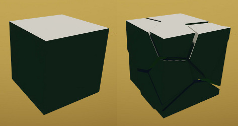

Обзор
Автоматическая генерация соединений позволяет взять составную (многоузловую) cgf и сгенерировать соединения между ее соприкасающимися частями, а также использовать разрыв template для предварительного разрыва произвольной части сетки. Это делается путем размещения нескольких объектов Physics/JointGen вокруг объекта или кисти и применения к нему свойств Modify/Physics/Generate Breakable Joints. Он предложит сохранить новый cgf, если все прошло хорошо, и заменить исходный объект сломанной версией, чтобы его можно было сразу протестировать в игре (для повторения взлома необходима перезагрузка скрипта).
JointGens следует размещать в определенных точках, удары по которым с указанным импульсом должны привести к некоторой поломке (для справки, у пистолета SDK импульс около 130). Дополнительно JointGen может указать разрыв template cgf для каждой исходной части (если для одной части имеется несколько шаблонов, будет использоваться тот, у которого самое длинное имя). Разрыв template выглядит примерно так (справа части намеренно немного раздвинуты):

т. е. это по сути заранее разбитая коробка. В данном случае это очень простая тесселяция, но она может быть такой же сложной, как предварительно сломанный ассет качества AAA. При применении к исходной сетке он выполняет логическое пересечение для всех частей template.
Вот полный список свойств JointGen:
| Недвижимость | Описание |
|---|---|
| BreakTemplate | CGF-файл, который связывается с разрывом template. пример: broken_cube.cgf (обратите внимание – материала нет). В некоторых версиях CryEngine могут возникнуть проблемы с немедленной загрузкой cgf, поэтому в качестве меры предосторожности загрузите этот cgf в отдельный ассет на уровне (просто чтобы убедиться, что он загружен). Альтернативно, перед использованием этой функции установите для e_StreamCgf значение 0. |
| Материал | Дополнительный материал override для перерыва template (должен быть файлом .mtl). пример: break_tpl.mtl |
| Выравнивание | Позволяет указать выравнивание разрыва template относительно узла исходного объекта. Для случайного выравнивания AlignmentSeed можно использовать, чтобы сделать случайные числа воспроизводимыми (если несколько JointGens влияют на исходный объект, либо только один из них должен иметь начальное значение, либо все начальные значения должны быть одинаковыми). |
| ForceEntityPieces | Эквивалентно добавлению ключевого слова «entity» к UDP каждого фрагмента tpl. Используйте его, если у вас по той или иной причине проблемы с частицами. |
| Иерархический | Включает иерархическое разбиение вырезанных частей (созданные части будут оставаться скрытыми до тех пор, пока какая-либо из них не сломается, что хорошо для производительности). |
| Импульс | Импульс такой силы, приложенный в месте соединения, направленном к поверхности источника, вызовет разрушение |
| радиус | Радиус сферы, используемый для проверки столкновений с исходным объектом. |
| масштаб | По умолчанию самый длинный и самый короткий размеры template выравниваются с размерами исходного фрагмента и немного увеличиваются. При необходимости к этой шкале можно применить дополнительное масштабирование. |
| компенсация | Необязательное смещение template относительно выровненной позиции (можно использовать, если позиция по умолчанию приводит к нежелательным результатам). |
| Тайм-аут | Части могут исчезнуть после этого тайм-аута (0 отключает) |
| TimeoutInvis | Аналогично Timeout, но тикает только тогда, когда часть невидима. |
| TimeoutMaxVol | Отключает тайм-аут для частей с объемом больше этого |
| TimeoutVariance | Применяет случайность к таймаутам частей (указан в долях от 1, т.е. Таймаут 10 с дисперсией 0,2 дает диапазон 8..12) |
Предварительно разбитые части template могут (а для сложных сеток должны) иметь физические прокси, которые могут быть просто упрощенными версиями сеток рендеринга, но также могут быть примитивами (хотя только по одному на каждую часть). Если часть полностью находится внутри исходной сетки, прокси (и сетка рендеринга) будут использоваться как есть, и если она пересекает источник, прокси части будет пересекаться по логическому значению с прокси источника (если прокси-сервером детали является либо сетка, либо коробка; в противном случае его пересекающаяся сетка рендеринга будет физикализована).
Для каждого JointGen он вычисляет пороговое масштабирование для всех соединений, что приведет к некоторые поломка при попадании в эту точку, а затем «среднее» между решениями (если их несколько JointGens), причем каждое решение имеет больший вес вокруг соответствующего JointGen. Первоначально все соединения имеют прочность, пропорциональную площади контакта между соответствующими деталями. Предполагается, что части «касаются» друг друга, но им не обязательно проникать внутрь, поскольку пересечение вычисляется с небольшим дополнительным масштабированием.
Исходные части и части template могут иметь массу, указанную в UDP узла. Для деталей, разбитых шаблонами, исходная масса перераспределяется между деталями исходя из объемов. Однако, если детали template имеют явную массу, они будут override (я думаю, что в большинстве случаев имеет смысл установить 0 масс в шаблонах для обозначения «основных» частей). Как обычно, массы относительны, поэтому при использовании в объекте с определенной массой массы штук масштабируются в соответствии с общей суммой.
Как только суставы будут созданы, их можно сразу же протестировать в игре в исходном объекте/кисти. Во время тестирования полезно включить соответствующие помощники по физике. p_debug_joints, который покажет массы фигур и прочность суставов. Также генерация выводит в журнал сводный отчет.
В случае резки и исходная сетка, и шаблоны разрывов должны использовать несколько подматериалов. Кроме того, каждая вырезанная исходная часть и каждая часть template должны использовать один слот подматериала. Обычно логическое пересечение добавляет подматериал template к источнику (если он еще не существует). Если исходный материал находится вне пакета, он будет сохранен автоматически, если будет сохранен файл .cgf.
Прилагаетсяjg_pillar.grp который можно разместить на уровне. Он использует прикрепленныйjg_sample.zip.